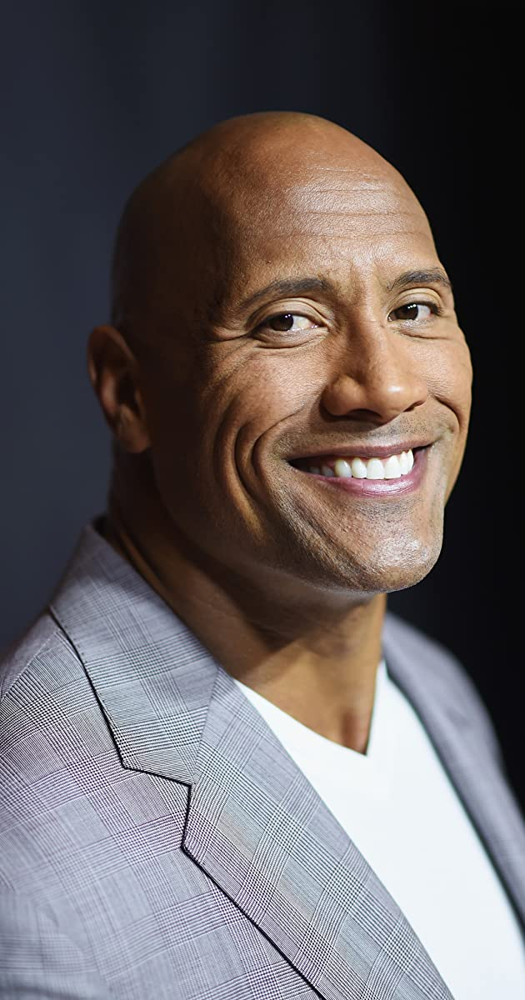
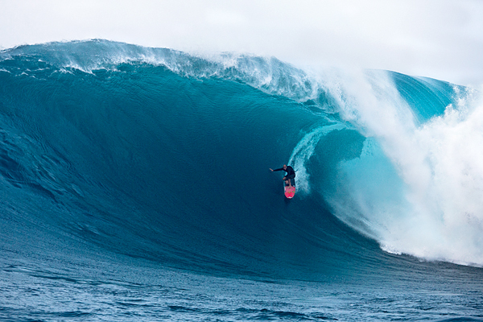
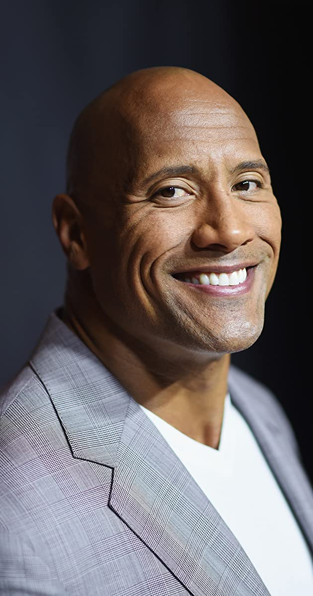
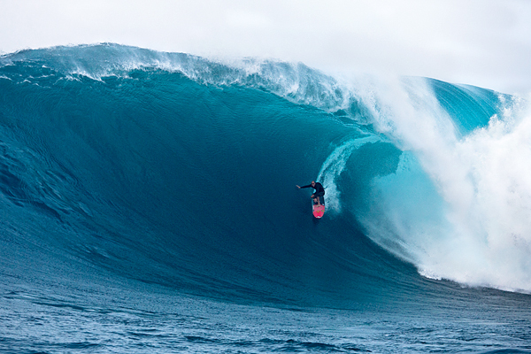
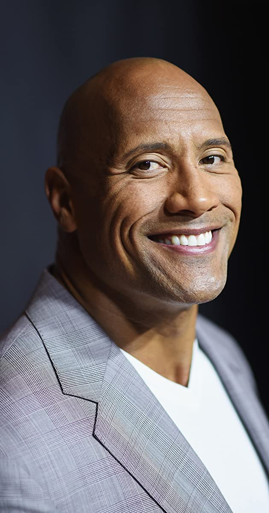
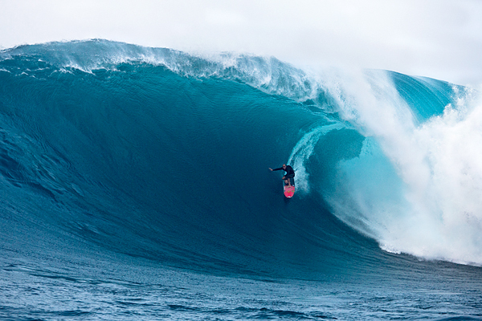

ansdjaosjdansdonja bqwjdjnsab



CalArts was originally formed in 1961, as a merger of the Chouinard Art Institute (founded 1921) and the Los Angeles Conservatory of Music (founded 1883).[10] Both of the formerly existing institutions were going through financial difficulties, and the founder of the Art Institute, Nelbert Chouinard, was mortally ill. Walt Disney was longtime friends with both Chouinard and Lulu May Von Hagen, the chair of the Conservatory, and discovered and trained many of his studio's artists at the two schools (including Mary Blair, Maurice Noble, and some of the Nine Old Men, among others). To keep the educational mission of the schools alive, the merger and expansion of the two institutions was coordinated; a process which continued after Walt's death in 1966.[11] Joining him in this effort were his brother Roy O. Disney, Nelbert Chouinard, Lulu May Von Hagen and Thornton Ladd (Ladd and Kelsey, Architects).